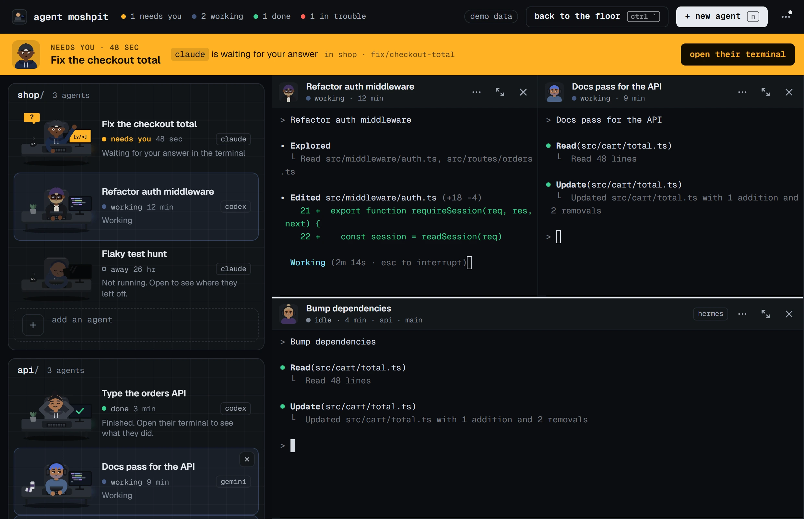
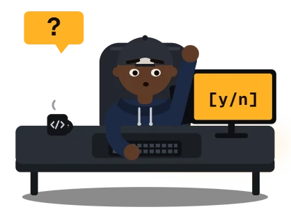
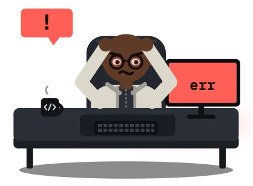
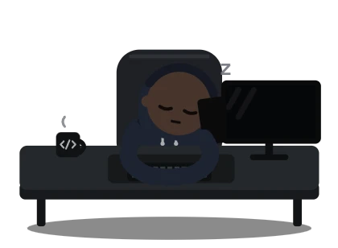
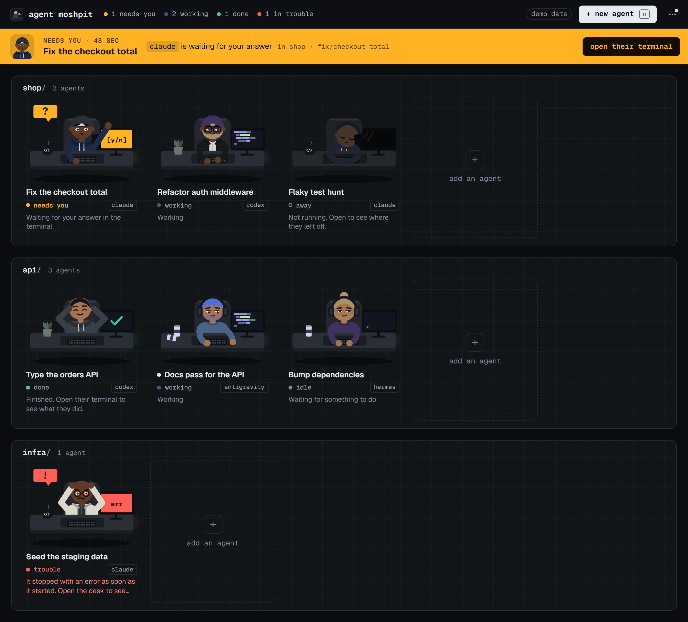

Windows
Windows 11, 64-bit. Windows 10 is untried.
The first time: Windows says it protected your PC. Choose More info, then Run anyway.
Claude Code, Codex, Antigravity CLI and the rest run as the real programs, each in a terminal of its own inside one window. Each is drawn as a person at a desk, so one look tells you who is working, who is done, and who has a hand up because they need you.


needs you A hand up. It has stopped on a question only you can answer.
trouble Hands on their head. The program stopped with an error.
away Asleep. Not running; the desk keeps where they left off.Click a desk and their terminal opens beside the floor. Everything under a pane's header is the program's own screen: its prompt, its slash commands, its approvals. The office draws none of it. You answer a question where the program asks it.
Open as many as you like, side by side or in a grid. Close the window and the agents keep working; the tray icon and a notification tell you when one needs you.

claude, codex or agy you already have, the way your terminal does. It keeps no API key and no model setting.Windows 11, 64-bit. Windows 10 is untried.
The first time: Windows says it protected your PC. Choose More info, then Run anyway.
macOS 10.15 or later.
The first time: macOS refuses to open it. Go to System Settings, Privacy & Security, and choose Open Anyway.
64-bit, with WebKitGTK 4.1.
The first time: an AppImage has to be made runnable: chmod +x the file, then start it.
The installers are not signed with a paid certificate yet, which is why Windows and macOS ask the first time. All downloads and the release notes are on GitHub. You also need at least one agent CLI, installed and signed in the way its makers say; the office can install the ones published on npm for you.